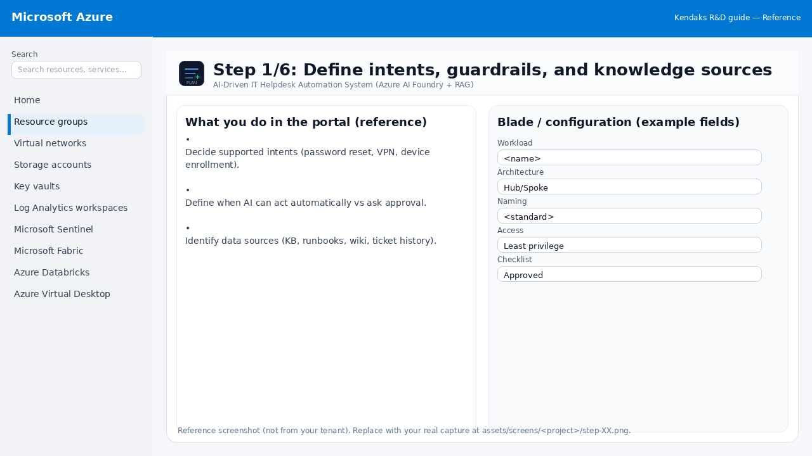
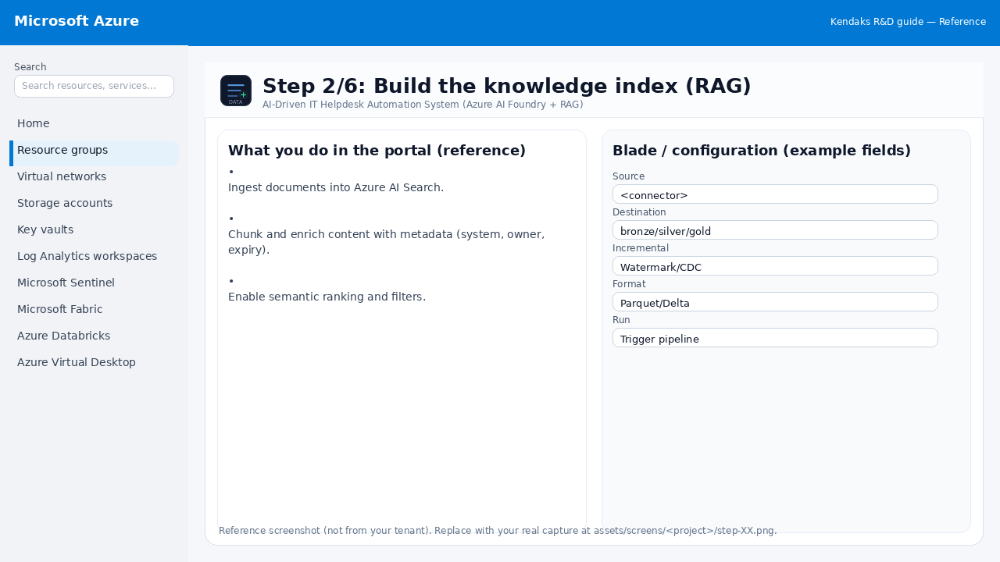
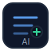
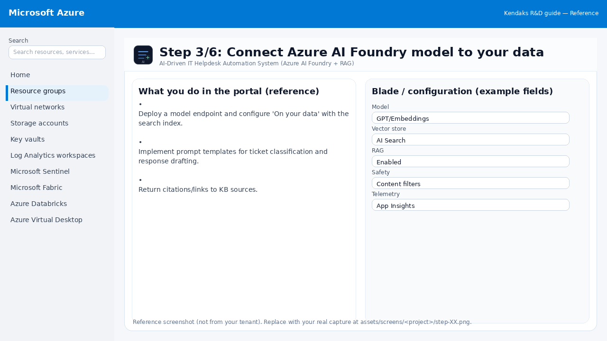
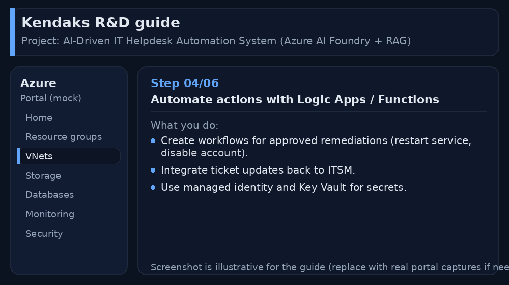
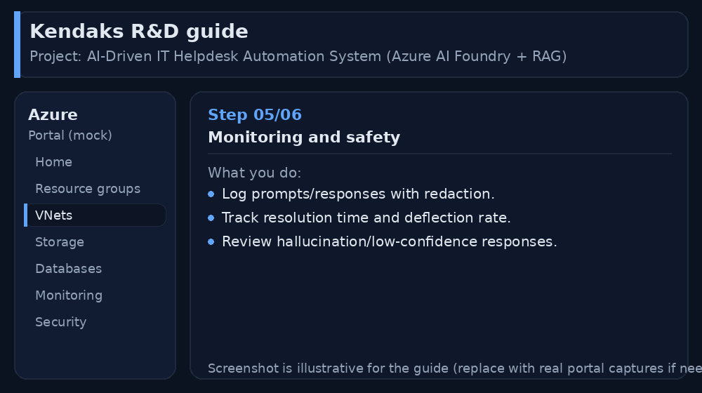
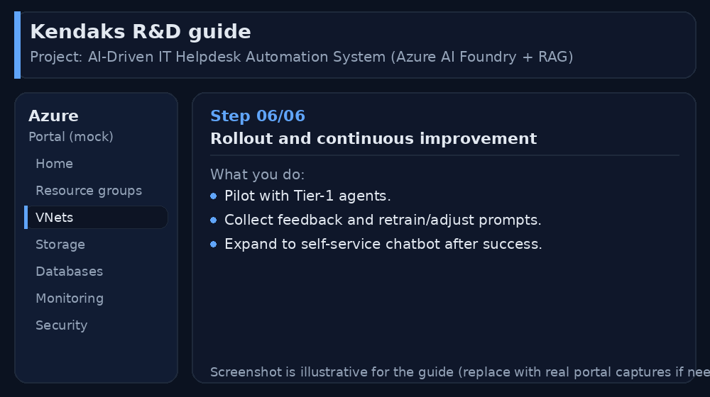

AI-Driven IT Helpdesk Automation System (Azure AI Foundry + RAG)
Category: AI & Automation
Scenario: IT helpdesk wants faster resolution with AI summaries, suggested fixes, and automated actions. Example: 'Kendaks IT Helpdesk' integrates ITSM tickets + internal KB and triggers Logic Apps remediation.
Architecture diagram
High-level view of the main components and data/control flows.
Low-level architecture diagram (Visio-style)
Implementation view (networking, security, ops). Click to open full size.
Low-level architecture details
(No low-level text provided.)
Step-by-step implementation
Step 1/6
Define intents, guardrails, and knowledge sources

Reference portal screenshot (click to zoom). Replace with your tenant capture if needed.
Decide supported intents (password reset, VPN, device enrollment). Define when AI can act automatically vs ask approval. Identify data sources (KB, runbooks, wiki, ticket history).
Validation checklist
Stakeholders have signed off the scope, SLAs, and data/security requirements. You have documented naming standards, environments, and ownership (RACI).
Step 2/6
Build the knowledge index (RAG)

Reference portal screenshot (click to zoom). Replace with your tenant capture if needed.
Ingest documents into Azure AI Search. Chunk and enrich content with metadata (system, owner, expiry). Enable semantic ranking and filters.
Validation checklist
The storage/lakehouse/warehouse resources are created and accessible via least privilege. A sample dataset lands successfully and can be queried/read end-to-end. Retention, encryption, and backup settings match requirements.
Step 3/6

Connect Azure AI Foundry model to your data

Reference portal screenshot (click to zoom). Replace with your tenant capture if needed.
Deploy a model endpoint and configure 'On your data' with the search index. Implement prompt templates for ticket classification and response drafting. Return citations/links to KB sources.
Validation checklist
Grounding/knowledge sources are configured and tested with sample prompts. Safety filters and logging are enabled; access is least privilege.
Step 4/6
Automate actions with Logic Apps / Functions

Reference portal screenshot (click to zoom). Replace with your tenant capture if needed.
Create workflows for approved remediations (restart service, disable account). Integrate ticket updates back to ITSM. Use managed identity and Key Vault for secrets.
Validation checklist
Connections/authentication succeed and test messages/records flow through. Retries/DLQ/error handling are configured and validated with a forced failure.
Step 5/6
Monitoring and safety

Reference portal screenshot (click to zoom). Replace with your tenant capture if needed.
Log prompts/responses with redaction. Track resolution time and deflection rate. Review hallucination/low-confidence responses.
Validation checklist
Logs and metrics are flowing (check Log Analytics / Monitor). Alerts trigger correctly (test alert path to email/Teams/ITSM).
Step 6/6
Rollout and continuous improvement

Reference portal screenshot (click to zoom). Replace with your tenant capture if needed.
Pilot with Tier-1 agents. Collect feedback and retrain/adjust prompts. Expand to self-service chatbot after success.
Validation checklist
UAT completed with representative users and scenarios. Performance meets baseline; issues tracked and remediated.